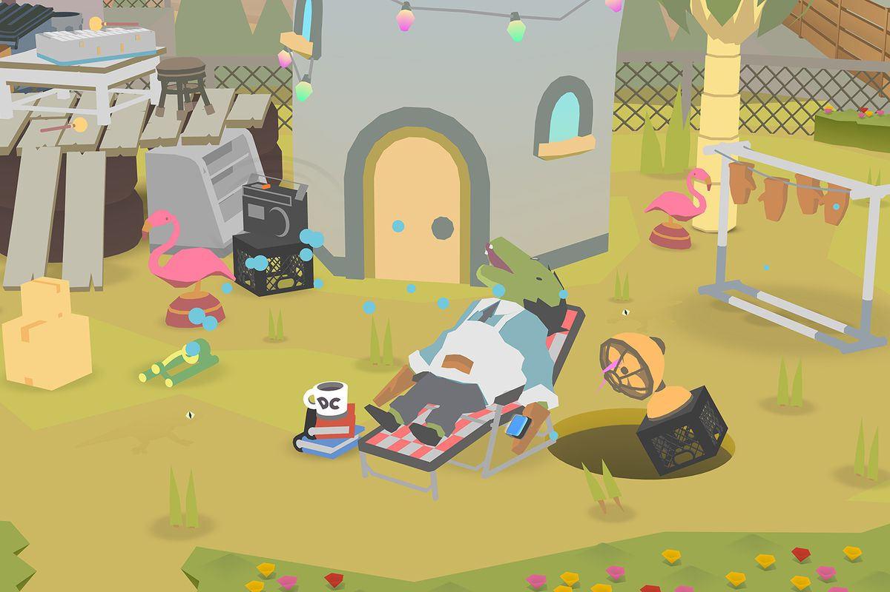

I am in a game development class, really excited by the potential - and the ways game development overlaps with interaction design. Specifically, I am interested in indie game development, and the way artists and developers can create unique perspectives in their games, or give the user a unique way to interact.
A horror game: you are a kid who opened a christmas present early, found an antsy furby-like toy, and now have to keep it happy or its evil mom will chase you down. Ben Esposito

A game where you play as a hole in the ground, that swallows up L.A. Ben Esposito
Game development is such a substantial project, that in general prototyping and proof of concepts are much more important.
These optimize development, and give an idea of the experience much quicker. Kind of like the 5Es, they use a high concept and quick prototying to alllow testing to occur early, rather than once it's all done.
Game Prototyping
The article is written by a group of students who find a lot of game development sucess in a process of rapid prototyping.
"The project started in Spring 2005 with the goal of discovering and rapidly prototyping as many new forms of gameplay as possible. A team of four grad students, we locked ourselves in a room for a semester with three rules:
- Each game must be made in less than seven days.
- Each game must be made by exactly one person.
- Each game must be based around a common theme i.e. "gravity", "vegetation", "swarms", etc."
"More Time != More Quality"
Gregbarth.tv - houses a ton of awesome weird stuff, but specifically I am a fan of the many examples of physical set design,
stop motion and creative filming that creates images that look digital, or digitally generated, but reveal their physical nature.
What I wonder is, what about them reveals that they were truly physical - will there be a point when rendering is so good we will never be able to tell the difference?
Can we actually tell the difference now? What do we gain by integrate physical elements (either in creation or interaction)
into an experience?
Back Home